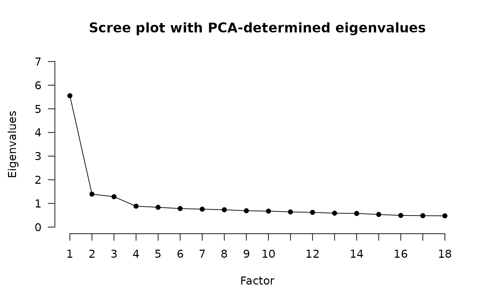
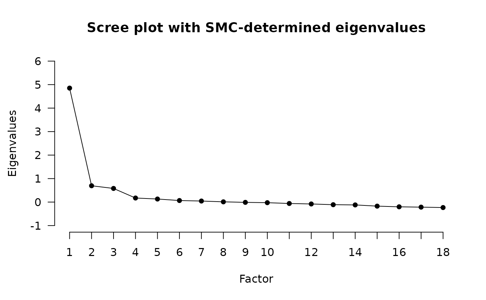

The scree plot was originally introduced by Cattell (1966) to perform the scree test. In a scree plot, the eigenvalues of the factors / components are plotted against the index of the factors / components, ordered from 1 to N factors components, hence from largest to smallest eigenvalue. According to the scree test, the number of factors / components to retain is the number of factors / components to the left of the "elbow" (where the curve starts to level off) in the scree plot.
Cattell, R. B. (1966). The scree test for the number of factors. Multivariate Behavioral Research, 1(2), 245–276. https://doi.org/10.1207/s15327906mbr0102_10
Zwick, W. R., & Velicer, W. F. (1986). Comparison of five rules for determining the number of components to retain. Psychological Bulletin, 99, 432–442. http://dx.doi.org/10.1037/0033-2909.99.3.432
data.frame or matrix. Dataframe or matrix of raw data or matrix with correlations.
character. On what the eigenvalues should be found. Can be either "PCA", "SMC", or "EFA", or some combination of them. If using "PCA", the diagonal values of the correlation matrices are left to be 1. If using "SMC", the diagonal of the correlation matrices is replaced by the squared multiple correlations (SMCs) of the indicators. If using "EFA", eigenvalues are found on the correlation matrices with the final communalities of an exploratory factor analysis solution (default is principal axis factoring extracting 1 factor) as diagonal.
character. Passed to stats::cor if raw
data is given as input. Default is "pairwise.complete.obs".
character. Passed to stats::cor.
Default is "pearson".
numeric. Number of factors to extract if "EFA" is included in
eigen_type. Default is 1.
Additional arguments passed to EFA. For example,
to change the extraction method (PAF is default).
A list of class SCREE containing
A vector containing the eigenvalues found with PCA.
A vector containing the eigenvalues found with SMCs.
A vector containing the eigenvalues found with EFA.
A list of the settings used.
As the scree test requires visual examination, the test has been especially criticized for its subjectivity and with this low inter-rater reliability. Moreover, a scree plot can be ambiguous if there are either no clear "elbow" or multiple "elbows", making it difficult to judge just where the eigenvalues do level off. Finally, the scree test has also been found to be less accurate than other factor retention criteria. For all these reasons, the scree test has been recommended against, at least for exclusive use as a factor retention criterion (Zwick & Velicer, 1986)
The SCREE function can also be called together with other factor
retention criteria in the N_FACTORS function.
SCREE(test_models$baseline$cormat, eigen_type = c("PCA", "SMC"))
#>
#> Eigenvalues were found using PCA and SMC.
#>
#>

